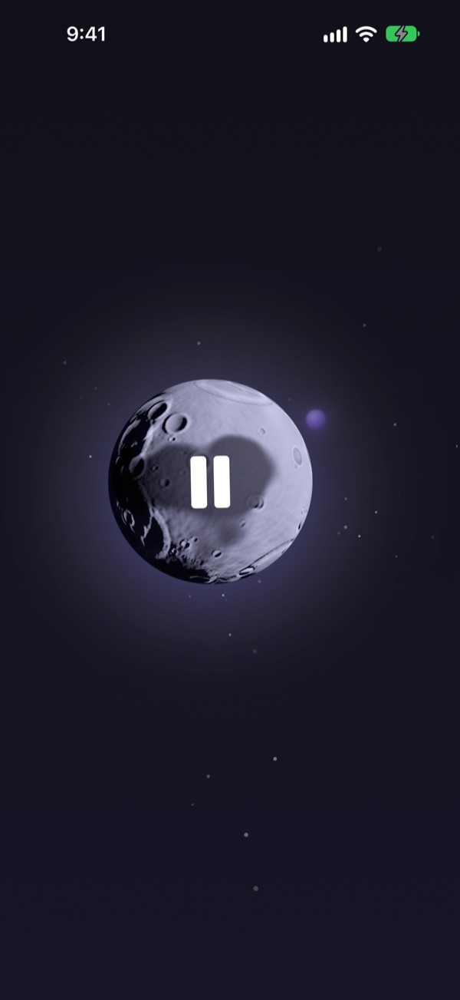
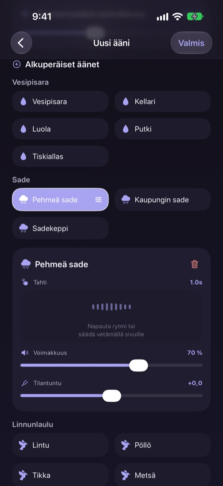
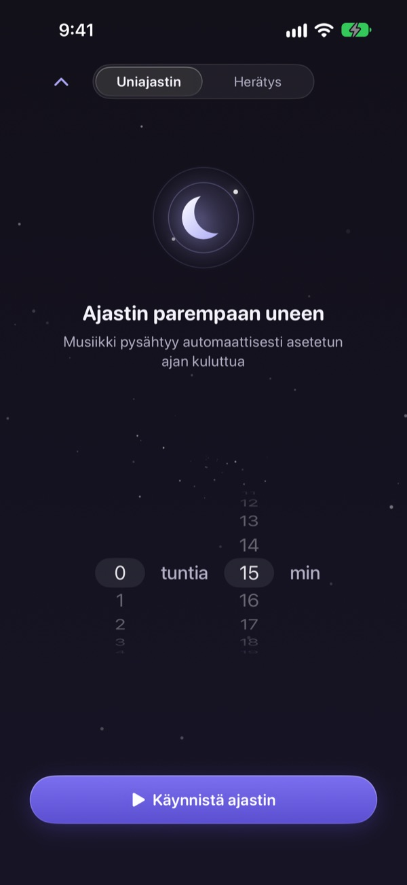
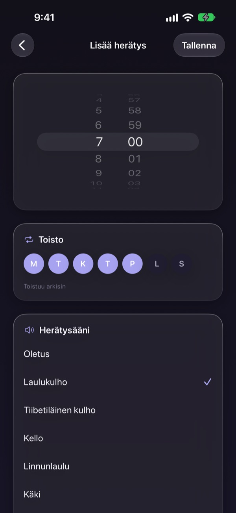
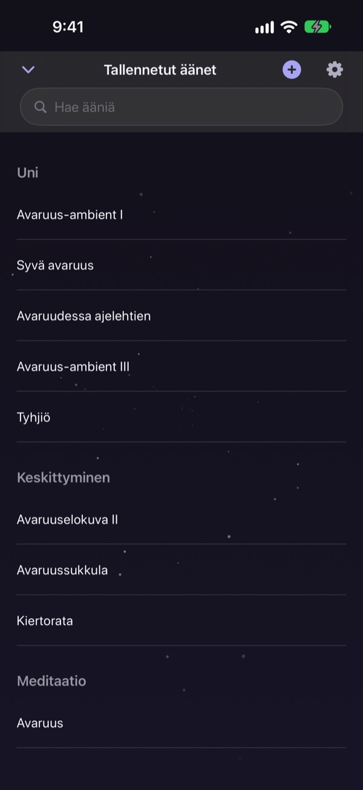

Älä käytä yötä
oikean äänen etsimiseen
Kerrosta kerran sade, vesipisarat ja laulava malja omaksi äänesi. Seuraavasta yöstä alkaen riittää kuun napautus.
Kaikkia ääniä voi kuunnella ilmaiseksi. iPhonelle ja iPadille.

Onko nukahtamisäänen etsimiseen mennyt joskus tunti?
Sade on liian yksitoikkoinen, aallot liian kovia ja video katkeaa mainokseen keskellä yötä. Dalbitissa kerrostat itse lempiäänesi, kunnes ne sopivat juuri sinulle, ja pidät tuloksen yhden kuun takana.
Rakenna äänesi kerroksista
Pinoa sadetta, vesipisaroita, linnunlaulua ja laulavia maljoja. Säädä jokaiselle kerrokselle äänenvoimakkuus, kuinka usein se kuuluu ja mistä suunnasta, ja lisää taustalle aaltoja tai pianoa.
Nimeä miksaus, tallenna se ja palaa siihen minä yönä tahansa.

Hiljenee herättämättä sinua
Uniajastin ei koskaan katkaise ääntä kesken. Se hiljentää sitä hitaasti, jotta loppu ei herätä sinua.
Ääni jatkuu näytön ollessa pimeänä tai toisessa appissa, ja jos et koske mihinkään, näyttö himmenee itsestään.

Aamulla herätys pehmeästi
Aseta herätyksiä laulavalla maljalla, tiibetiläisellä maljalla, linnunlaululla tai käellä ja toista niitä valitseminasi viikonpäivinä.

Yksi kuu hoitaa kaiken
Napauta kuuta toistaaksesi ja uudelleen keskeyttääksesi. Pyyhkäise sivulle vaihtaaksesi ääntä, ylös uniajastimeen ja alas tallennettuihin ääniin.
Kun ääni tuntuu oikealta, pidä sormea kuun päällä lisätäksesi sen suosikkeihin.

Alkuun kolmella askeleella
- 1
Napauta kuuta
Avaa appi, napauta kuuta, ja ääni alkaa heti.
- 2
Pyyhkäise sivulle
Selaa, kunnes löydät mieleisesi äänen.
- 3
Aseta ajastin ja käy makuulle
Pyyhkäise ylös, valitse aika, ja sen jälkeen ääni hiipuu hitaasti.
Mitä kuu tekee
- Napautus
- toista, keskeytä
- Pyyhkäisy sivulle
- seuraava ääni
- Pyyhkäisy ylös
- uniajastin ja herätykset
- Pyyhkäisy alas
- tallennetut äänet
- Pitkä painallus
- lisää suosikkeihin
Voit myös keskeyttää ja jatkaa lukitusnäytön toistosäätimistä.
Kuuntelu on ilmaista. Premium on lisää luomista varten.
Ilmainen
- Kaikki äänet
- Äänten kerrostaminen omaksi miksaukseksi
- Enintään kolme tallennettua miksausta
- Hiljalleen hiipuva uniajastin
- Herätykset pehmeillä äänillä
- Suosikit
Dalbit Premium
- Luo ja tallenna miksauksia niin monta kuin haluat
Kuukausittain automaattisesti uusiutuva tilaus ilmaisella kokeilujaksolla
Tilaus uusiutuu automaattisesti, ellei sitä peruta vähintään 24 tuntia ennen kuluvan jakson loppua, ja veloitus alkaa ilmaisen kokeilun päätyttyä. Applen vakiokäyttöehdot (EULA) ovat voimassa.
Usein kysyttyä
Miten toistan ja vaihdan ääniä?
Napauta kuuta aloitusnäytöllä toistaaksesi ja uudelleen pysäyttääksesi. Pyyhkäise sivulle vaihtaaksesi ääntä, ylös uniajastimeen ja alas omaan kirjastoosi.
Loppuuko ääni, kun näyttö sammuu?
Ei. Ääni jatkuu näytön ollessa pimeänä tai toisessa appissa. Pysäytä se napauttamalla kuuta uudelleen tai lukitusnäytön säätimillä.
Mitä tapahtuu, kun uniajastin päättyy?
Ääni ei katkea äkisti. Se hiljenee vähitellen ja pysähtyy sitten, jotta et herää.
Herätys ei soi.
Appi pyytää lupaa herätyksiin, kun luot ensimmäisen. Tarkista, että lupa on päällä kohdassa Asetukset > Dalbit.
Mihin miksaukseni tallentuvat?
Miksaukset, herätykset ja asetukset ovat vain tällä laitteella. Jos poistat apin, ne poistuvat sen mukana.
Mitä voin käyttää ilmaiseksi?
Kaikkia ääniä, kerrostamista ja enintään kolmea omaa miksausta. Uniajastin ja herätykset ovat myös ilmaisia. Premium poistaa miksausten määrärajan.
Miten peruutan tilauksen?
Avaa Asetukset > Apple-tili > Tilaukset, valitse Dalbit ja peruuta. Jos et peruuta vähintään 24 tuntia ennen kuluvan jakson loppua, tilaus uusiutuu automaattisesti.
Vaihdoin puhelinta ja tilaus katosi.
Kirjaudu samalla Apple-tilillä, avaa Dalbitin tilausnäkymä ja napauta Palauta ostot.
Miten ilmoitan virheestä tai ehdotan ominaisuutta?
Lähetä palautetta apin asetuksista tai kirjoita alla olevaan osoitteeseen. Vastaamme yleensä muutaman päivän sisällä.
Kysyttävää tai ideoita? Kirjoita osoitteeseen mizzking75@gmail.com.